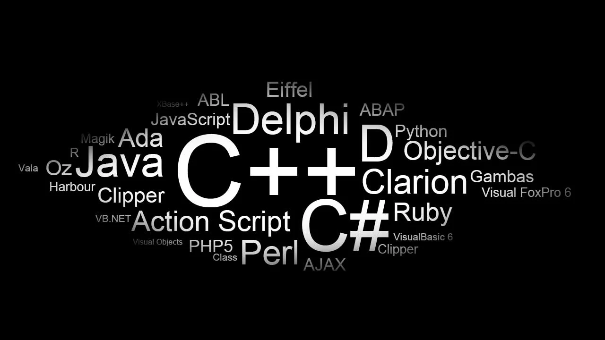

Programming Languages

Programming Languages
I would say that when i started learning how to cod for the first time i didn't really enjoy it,because it was too hard for me.After researching and practising alot i found out that it's one of my most favourite things to do espically when i have free time because i can study what ever coding language i want.
Web design
- Html
- css
- javascript
Programming Languages
- C++
- Dart
Framworks
- flutter
Data base
- My SQL
- Microsoft Access